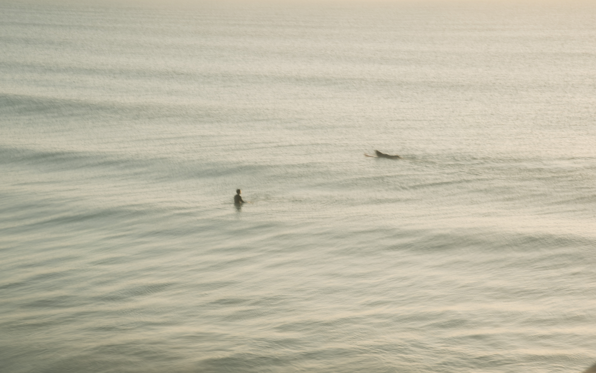
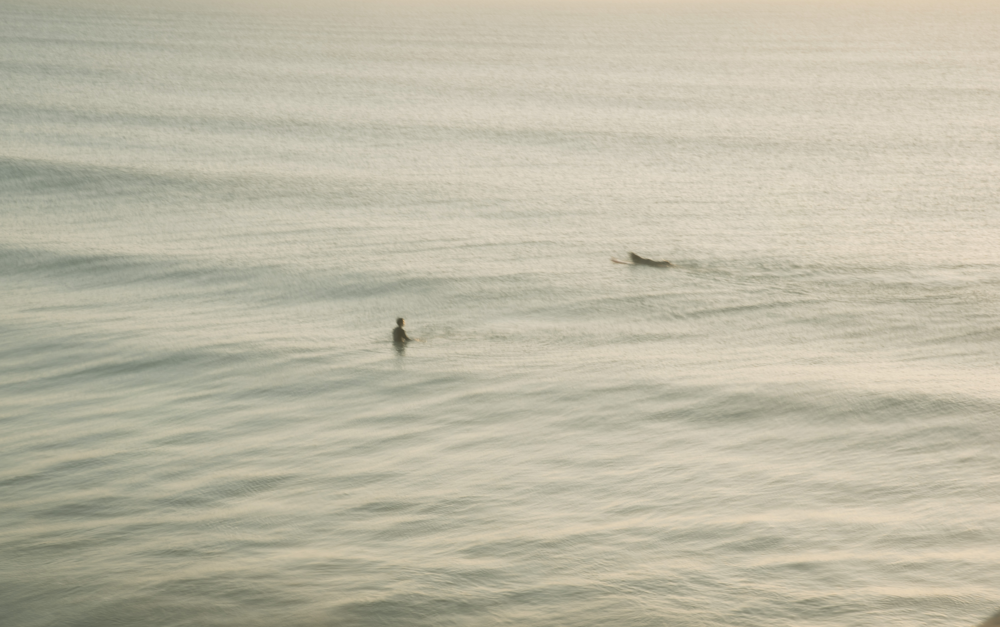

About Me
I am a Year 12 photography student from Papanui High School. This website is dedicated to help everyone to enhance their photography skills. I hope you find this website useful.
My Portfolio
"it is not always we have to do more, but rather that we have to focus on less"
- Nathan W Morris
 
